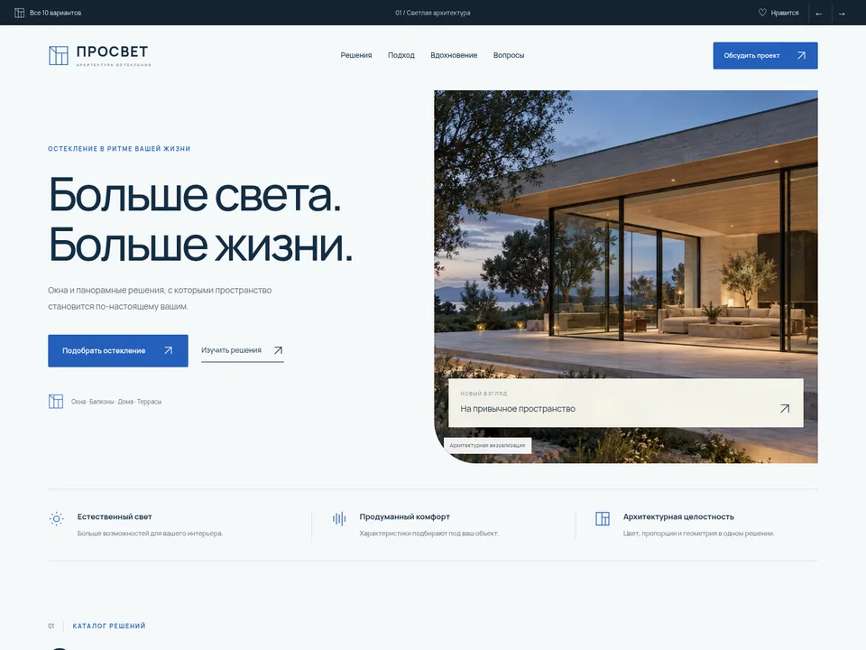
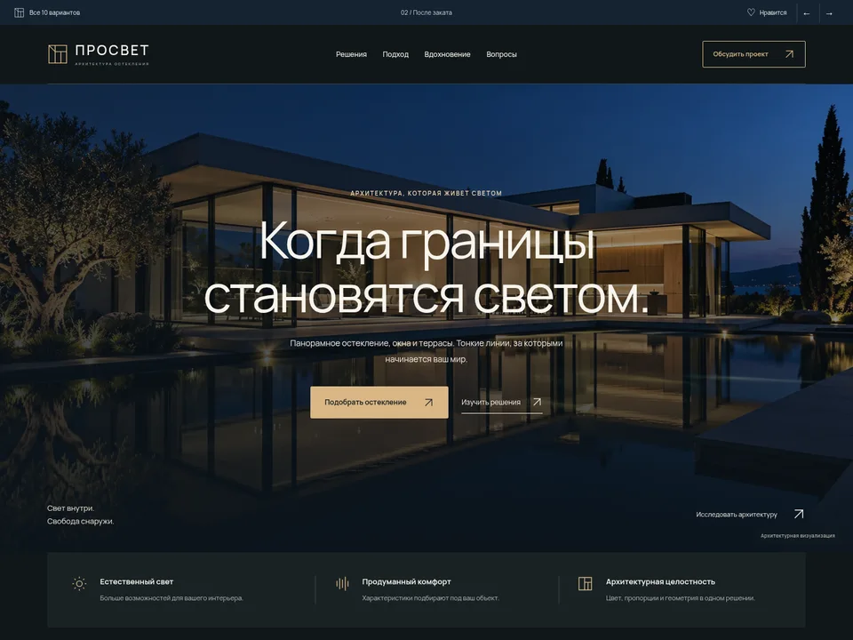
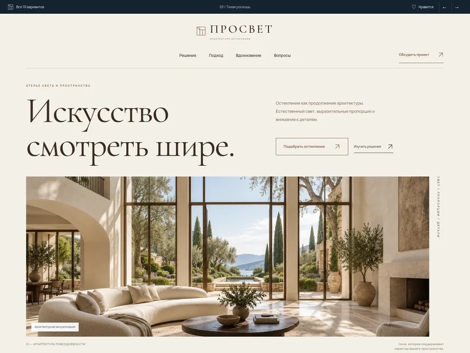
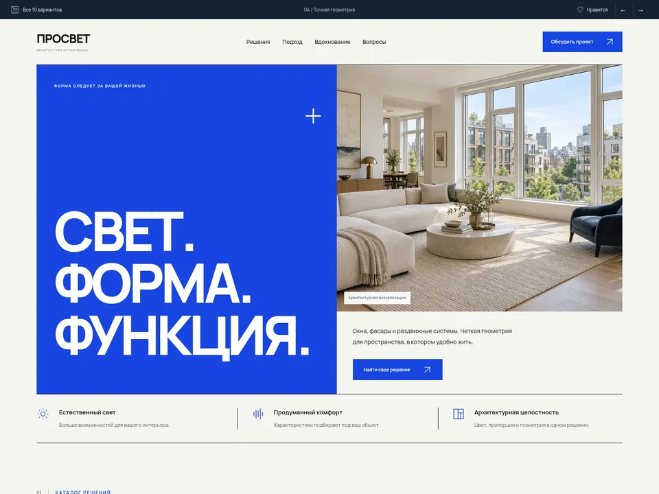
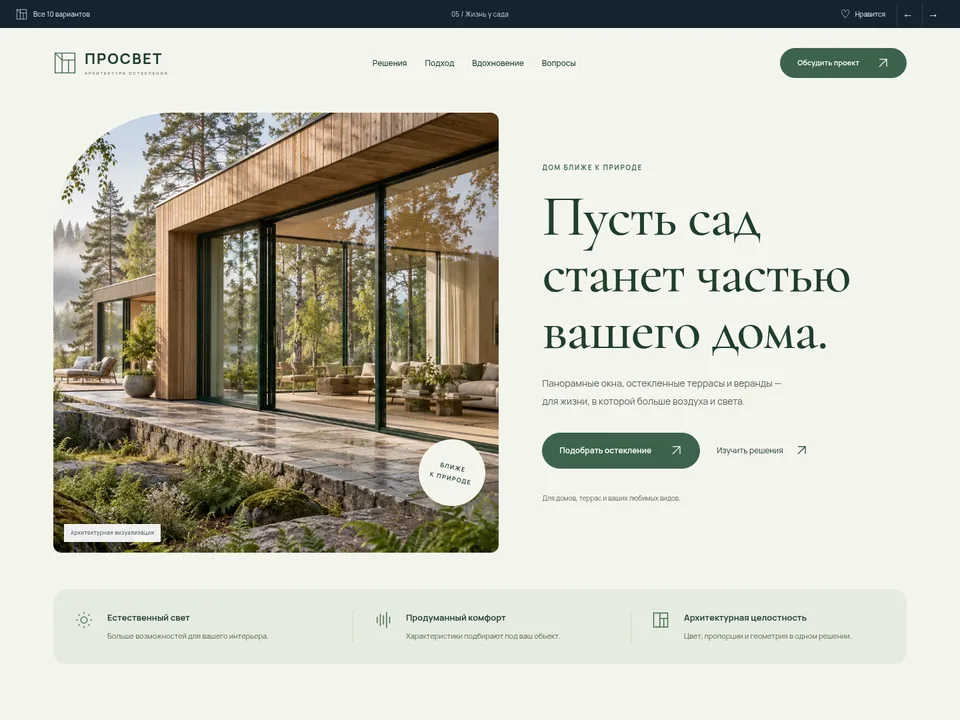
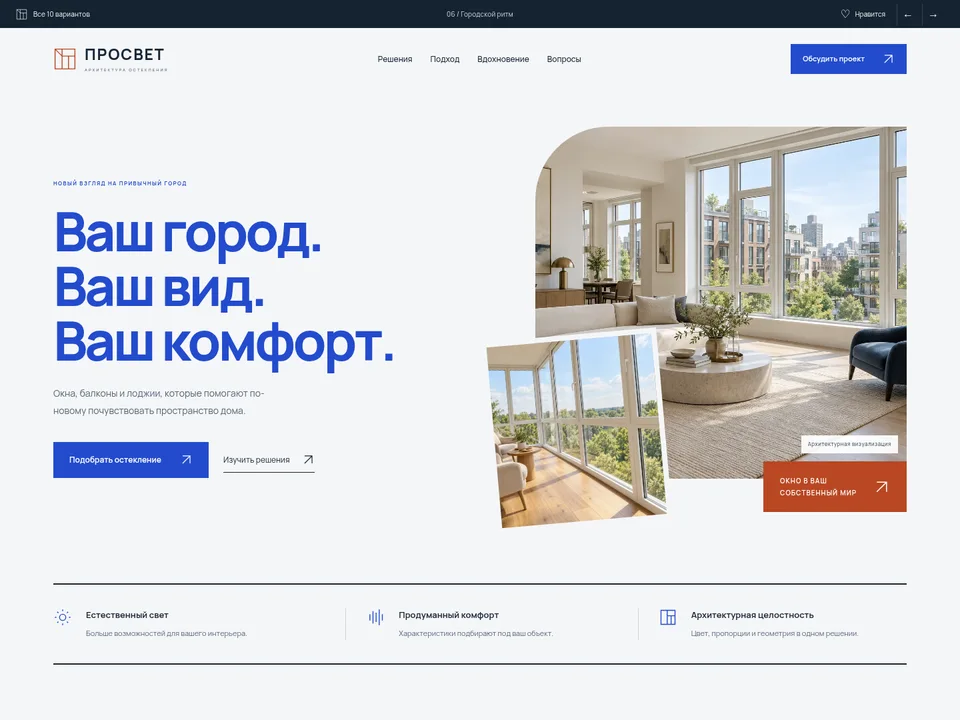
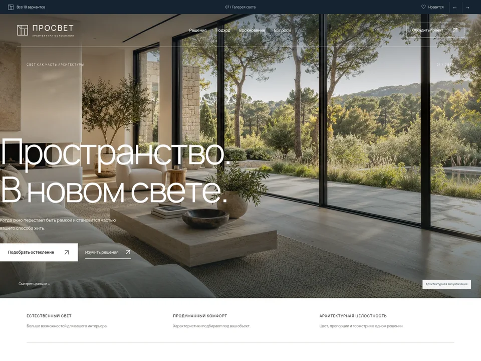
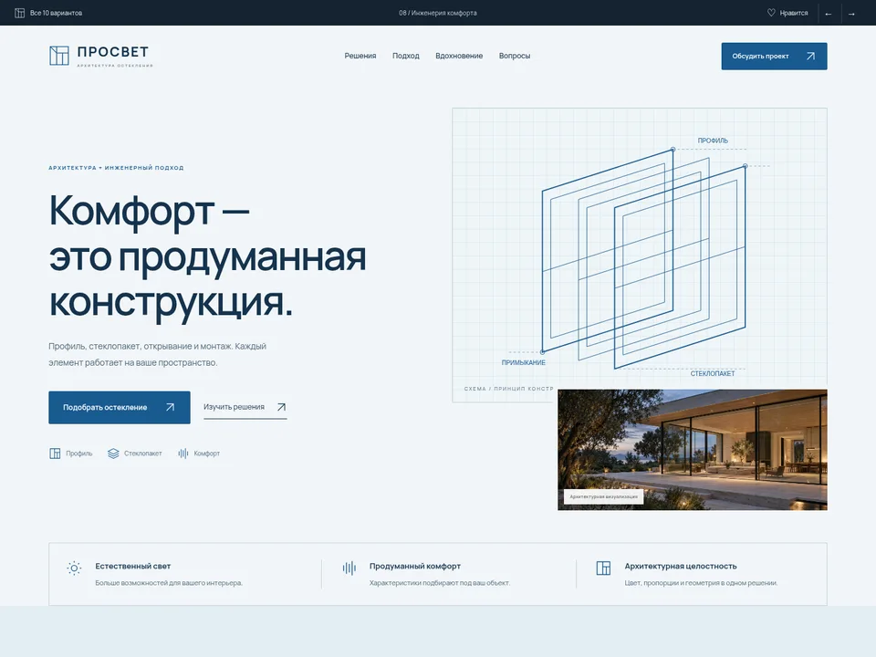
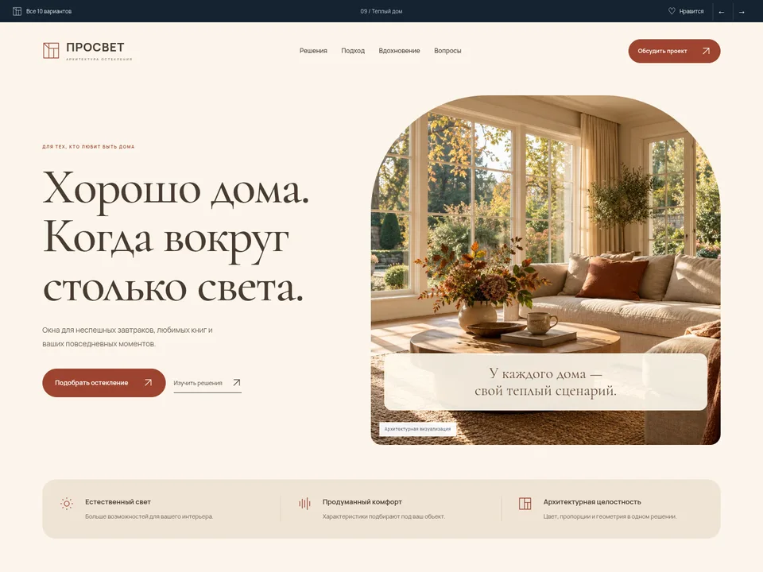
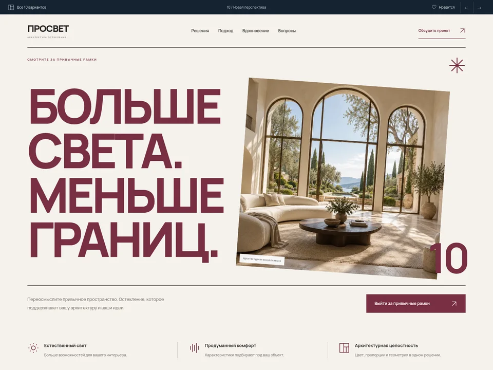

01Открыть страницуМинимализм
Светлая архитектура
Чистая сетка, естественный свет и спокойная скандинавская эстетика.
ДЕСЯТЬ САМОСТОЯТЕЛЬНЫХ ДИЗАЙН-НАПРАВЛЕНИЙ
От спокойной архитектуры до смелой студийной подачи. Откройте каждый вариант, прокрутите страницу целиком и попробуйте ее на телефоне.

01Открыть страницуМинимализм
Чистая сетка, естественный свет и спокойная скандинавская эстетика.

02Открыть страницуТемная архитектура
Глубокие темные оттенки, вечерняя архитектура и теплый металлический акцент.

03Открыть страницуЖурнальная эстетика
Теплая бумага, благородная антиква и композиция архитектурного журнала.

04Открыть страницуГрафический дизайн
Ультрамарин, модульная сетка и выразительная геометрия оконного профиля.

05Открыть страницуПриродная эстетика
Шалфей, дерево, мягкие формы и дом, открытый природе.

06Открыть страницуСовременный город
Смелый кобальтовый, динамичная композиция и внимание к жизни в квартире.

07Открыть страницуФотографический минимализм
Фотография на первом плане, тонкая типографика и ритм архитектурной галереи.

08Открыть страницуТехнологии
Техническая графика, многослойность стекла и точная подача решений.

09Открыть страницуЖилые интерьеры
Терракота, мягкие карточки и светлая дружелюбная атмосфера жилого дома.

10Открыть страницуАвторский дизайн
Бордовый акцент, гигантская типографика и выразительная студийная композиция.
Пока ничего не выбрано. Вернитесь ко всем вариантам и нажмите ♡ на понравившихся.
Сравните композицию, атмосферу и удобство. Можно выбрать несколько вариантов — например, первый экран одного и каталог другого. Напишите их номера в чат Codex, чтобы продолжить работу над основным сайтом.
♡ сохраняет выбор только в этом браузере. Все изображения — AI-референсы. Это дизайн-концепции: цены и сведения о компании не выдумывались, заявки никуда не отправляются.